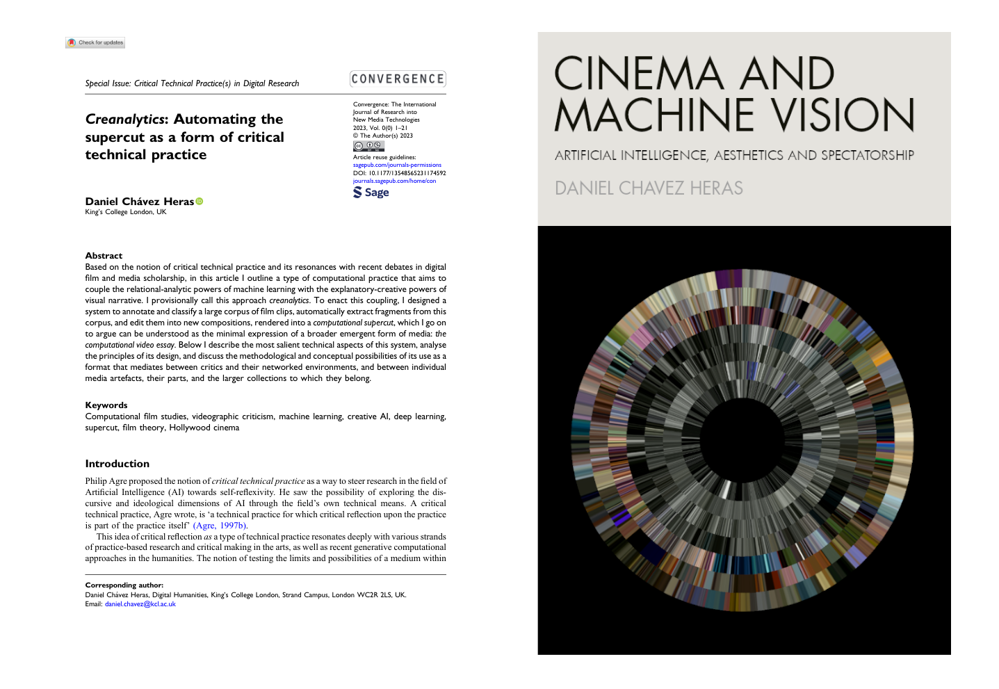
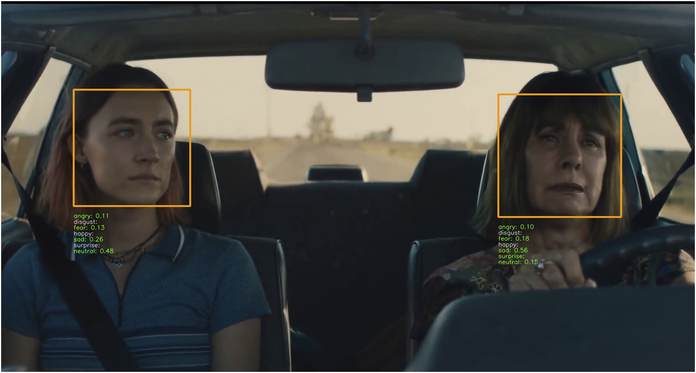
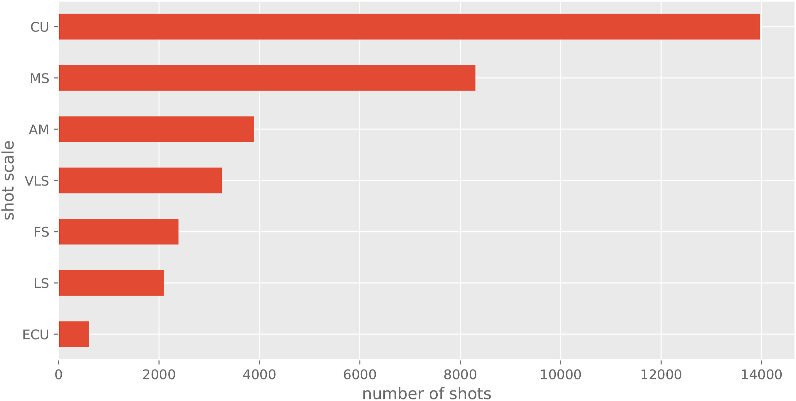
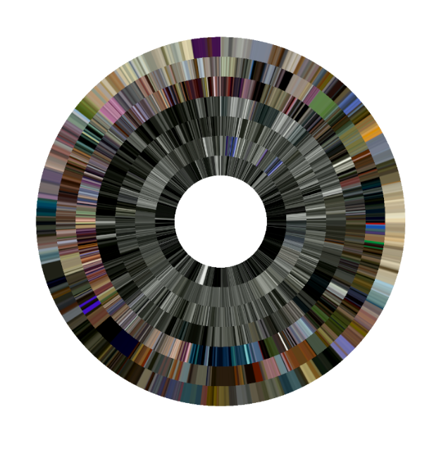

<!DOCTYPE html>
<html lang="en">
  <head>
    <meta charset="utf-8" />
    <meta name="viewport" content="width=device-width, initial-scale=1.0, maximum-scale=1.0, user-scalable=no" />

    <title>Creanalytics</title>
    <link rel="stylesheet" href="dist/reveal.css" />
    <link rel="stylesheet" href="dist/theme/moon.css" id="theme" />
    <link rel="stylesheet" href="plugin/highlight/zenburn.css" />
	<link rel="stylesheet" href="css/layout.css" />
	<link rel="stylesheet" href="plugin/customcontrols/style.css">
	<link rel="stylesheet" href="plugin/chalkboard/style.css">

	<link rel="stylesheet" href="plugin/reveal-pointer/pointer.css" />


    <script defer src="dist/fontawesome/all.min.js"></script>

	<script type="text/javascript">
		var forgetPop = true;
		function onPopState(event) {
			if(forgetPop){
				forgetPop = false;
			} else {
				parent.postMessage(event.target.location.href, "app://obsidian.md");
			}
        }
		window.onpopstate = onPopState;
		window.onmessage = event => {
			if(event.data == "reload"){
				window.document.location.reload();
			}
			forgetPop = true;
		}

		function fitElements(){
			const itemsToFit = document.getElementsByClassName('fitText');
			for (const item in itemsToFit) {
				if (Object.hasOwnProperty.call(itemsToFit, item)) {
					var element = itemsToFit[item];
					fitElement(element,1, 1000);
					element.classList.remove('fitText');
				}
			}
		}

		function fitElement(element, start, end){

			let size = (end + start) / 2;
			element.style.fontSize = `${size}px`;

			if(Math.abs(start - end) < 1){
				while(element.scrollHeight > element.offsetHeight){
					size--;
					element.style.fontSize = `${size}px`;
				}
				return;
			}

			if(element.scrollHeight > element.offsetHeight){
				fitElement(element, start, size);
			} else {
				fitElement(element, size, end);
			}		
		}


		document.onreadystatechange = () => {
			fitElements();
			if (document.readyState === 'complete') {
				if (window.location.href.indexOf("?export") != -1){
					parent.postMessage(event.target.location.href, "app://obsidian.md");
				}
				if (window.location.href.indexOf("print-pdf") != -1){
					let stateCheck = setInterval(() => {
						clearInterval(stateCheck);
						window.print();
					}, 250);
				}
			}
	};


        </script>
  </head>
  <body>
    <div class="reveal">
      <div class="slides"><section  data-markdown><script type="text/template"><!-- .slide: class="drop" -->
<div class="" style="position: absolute; left: 0px; top: 0px; height: 1200px; width: 1920px; min-height: 1200px; display: flex; flex-direction: column; align-items: center; justify-content: center" absolute="true">

# Creanalytics
### _Between Data Analysis and Media Synthesis_

Dr Daniel Chávez Heras


[@chavezheras@sigmoid.social](https://sigmoid.social/@chavezheras)

[movingpixel.net](https://movingpixel.net/)
</div>

<aside class="notes"><p>Thank you for the invitation, delighted to be here.</p>
</aside></script></section><section  data-markdown><script type="text/template"><!-- .slide: class="drop" -->
<div class="" style="position: absolute; left: 0px; top: 0px; height: 1200px; width: 1920px; min-height: 1200px; display: flex; flex-direction: column; align-items: center; justify-content: center" absolute="true">


</div>

<aside class="notes"><p>Recent paper of the same name in <em>Convergence: The International Journal of Research into New Media Technologies</em>.</p>
<p>I will go over the example I developed in the paper to flesh out the argument behind the notion of creanalytics, and I will conclude with a more general reflection about AI and the future of audiovisual archives.</p>
</aside></script></section><section ><section data-markdown><script type="text/template"><!-- .slide: class="drop" -->
<div class="" style="position: absolute; left: 0px; top: 0px; height: 1200px; width: 1920px; min-height: 1200px; display: flex; flex-direction: column; align-items: center; justify-content: center" absolute="true">

# Archives and Datasets


</div>

<aside class="notes"><p>Archives for humans to keep and explore
Datasets for machines to process and produce</p>
<p>Archives are created under a historical impulse; they are organised according to the record-keeping needs of the cultures that build them. This historical impulse requires a high degree of structuring, usually in the form of hierarchical ontologies that facilitate cataloguing and retrieval, and that aspire to a certain degree of historical accuracy, integrity, and permanence.</p>
<p>Datasets also respond to the sense-making needs of the cultures that build them however they come together under a different impulse; they tend to be contingent assemblages, made in response to specific a priori needs and questions relevant to engineering and the sciences.
In data science and machine learning engineering, datasets tend to be granular, flattened to matrix-like structures whose individual items are not meant to be publicly accessible or even individually meaningful to human observers.</p>
<p>Contemporary AI has succeeded in part for not caring at all about whether specific media artefacts are deemed significant enough by human critics to go ‘on the record’.</p>
<p>Archives and datasets produce value in almost opposite ways: while archives endow their constituent artefacts and records with additional symbolic layers, making them stable and tractable, datasets that feed contemporary AI systems atomise these artefacts, stripping them from context in order to make patterns visible through computational processing. In the first case value is produced by stability and addressability, in the second by aggregation and mutability.</p>
<p>Image by Erik Desmazières</p>
</aside></script></section><section data-markdown><script type="text/template"><!-- .slide: class="drop" -->
<div class="" style="position: absolute; left: 0px; top: 0px; height: 1200px; width: 1920px; min-height: 1200px; display: flex; flex-direction: column; align-items: center; justify-content: center" absolute="true">

## Moving Image Archives and Datasets


</div>

<aside class="notes"><p>Film archives, understood here as organised collections of individual films and other moving images, with records that include directors, years, countries of origin, performers, producers, etc. </p>
<p>However, each of these films can also be thought of as a collection of frames and a dataset of images. And through computing, these individual frames can relate much more freely, not only to other frames in the same film, but to a multitude of other frames in a multitude of other films. </p>
<p>Film archives can be thought in this way as potential collections of datasets, or more precisely, large latent datasets themselves.</p>
</aside></script></section><section data-markdown><script type="text/template"><!-- .slide: class="drop" -->
<div class="" style="position: absolute; left: 0px; top: 0px; height: 1200px; width: 1920px; min-height: 1200px; display: flex; flex-direction: column; align-items: center; justify-content: center" absolute="true">

## Semantic ladder of analysis

| Artefact     | Processing level       | Example                                                     |
|--------------|------------------------|-------------------------------------------------------------|
| Cinema       | Social – aggregate     | Popular Hollywood cinema                                    |
| Film         | Human                  | Jurassic Park (1993)                                        |
| Clip         | Human/computer         | Raptors in the Kitchen Scene (https://youtu.be/dnRxQ3dcaQk) |
| Shot         | Human-computer         | 130 frames (5.421 s)                                        |
| Frame        | Computer/human         | Individual frame (512 × 340 pixels)                         |
| Pixels       | Numeric – disaggregate | Vector ([176800x1]); Tensor ([16, 3, 340, 512])             |
</div>

<aside class="notes"><p>This table exemplifies the palimpsest of artefacts and levels of analysis at play between audiovisual archives and machine learning datasets.</p>
</aside></script></section></section><section ><section data-markdown><script type="text/template"><!-- .slide: class="drop" -->
<div class="" style="position: absolute; left: 0px; top: 0px; height: 1200px; width: 1920px; min-height: 1200px; display: flex; flex-direction: column; align-items: center; justify-content: center" absolute="true">

# Creanalytics
## (data) analysis through (creative) generation


</div>

<aside class="notes"><p>Analytic and generative approaches in computing tend to be split between scientific and creative domains, with their respective tools and communities of practice.</p>
<p>Deployed as analytical engines, computers can be used to find patterns across vast collections of imagery, and these patterns are often expressed as relations of proximity in space. </p>
<p>But to amount to knowledge, these spatial correlations require interpretation and explanation, which unfold sequentially, as critics seek to organise these patterns to infer causal relations and temporal representations between data objects and events. By coupling an analytical engine with a generative one, computing can be used to configure narratives about these proximity patterns and enable explanatory propositions through compositional techniques familiar to media scholarship.</p>
<p>The image shows a t-SNE mapping of a collection of soviet news reels. The dataset and the tool were developed by my colleagues in the cultural data analytics lab in Tallinn, Estonia.</p>
</aside></script></section><section data-markdown><script type="text/template"><!-- .slide: class="drop" -->
<div class="" style="position: absolute; left: 0px; top: 0px; height: 1200px; width: 1920px; min-height: 1200px; display: flex; flex-direction: column; align-items: center; justify-content: center" absolute="true">

## Supercuts
### (Data) sampling through (video) editing
</div>

<aside class="notes"><p>a supercut is an editing technique in which short video clips with common motifs or salient stylistic characteristics are extracted from their original context and are sequenced together in a montage. The commonalities are highlighted through repetition and interpreted by viewers as a form of <em>aboutness</em>, which then becomes the thematic content of the supercut.</p>
</aside></script></section><section data-markdown><script type="text/template"><!-- .slide: class="drop" -->
<div class="" style="position: absolute; left: 0px; top: 0px; height: 1200px; width: 1920px; min-height: 1200px; display: flex; flex-direction: column; align-items: center; justify-content: center" absolute="true">

>Just as capitalism treated workers as machines as a prelude to workers being replaced by machines, so also supercutters simulate database thinking in apparent anticipation of a moment, perhaps in the near future, when **neural networks will be able to search the entirety of digitized film history and create supercuts themselves, automatically**.

\- Max Tohline, 2021
</div>

<aside class="notes"><p>Every time we use a search engine, we commission a computer to make us something quite like a supercut. </p>
<p>The supercut entails not simply a mode of editing, but a mode of thinking expressed by a mode of editing.</p>
</aside></script></section><section data-markdown><script type="text/template"><!-- .slide: class="drop" -->
<div class="" style="position: absolute; left: 0px; top: 0px; height: 1200px; width: 1920px; min-height: 1200px; display: flex; flex-direction: column; align-items: center; justify-content: center" absolute="true">

>In the near future there will be a simple software or app, feeding its algorithm with keywords and other elements of interest, which will **automatically generate a perfect supercut of media content of any kind within a blink of an eye**.

\- Miklós Kiss, 2013
</div></script></section><section data-markdown><script type="text/template"><!-- .slide: class="drop" -->
<div class="" style="position: absolute; left: 0px; top: 0px; height: 1200px; width: 1920px; min-height: 1200px; display: flex; flex-direction: column; align-items: center; justify-content: center" absolute="true">

## Automating the supercut


<iframe title="vimeo-player" src="https://player.vimeo.com/video/830237949?h=5fb9301c4d" width="640" height="360" frameborder="0"    allowfullscreen></iframe>
</div>

<aside class="notes"><p>This was made using a tool called VGREP, developed by artist and creative coder Sam Lavigne as part of a small project funded through a small grant I got last year to explore computational media formats.</p>
<p>The tool takes a video file as an input, transcribes its dialogue, and then analyses the text to find common ngrams. These can then selected and edited as a supercut.</p>
<p>The lecture was called &quot;Modeling Doubt, Coding Humility&quot; and through this technique I found there were many more mentions of doubt than of coding or humility (the lecture however was ver good).</p>
<p>I wanted to take this idea a step forward and see if a similar effect could be achieved by operating directly on the images, automating a supercut of visual characteristics.</p>
</aside></script></section><section data-markdown><script type="text/template"><!-- .slide: class="drop" -->
<div class="" style="position: absolute; left: 0px; top: 0px; height: 1200px; width: 1920px; min-height: 1200px; display: flex; flex-direction: column; align-items: center; justify-content: center" absolute="true">

## Movie Clips YouTube channel

</div>

<aside class="notes"><p>An archive-like collection that is publicly available online: the <em>Movieclips</em> YouTube channel (<a href="https://journals.sagepub.com/doi/full/10.1177/13548565231174592#bibr29-13548565231174592">2006</a>), which serves as a corpus that is both large and consistent enough to be analysed and intervened using computational methods. </p>
<p>This channel is operated by the American media company <em>Fandango</em>, which owns the popular review aggregator website <em>Rotten Tomatoes</em>, and the recommender platform <em>Flixter</em>, and which is itself jointly owned by the Warner and Universal media conglomerates. </p>
<p>In their YouTube channel <em>Movieclips</em> is described as ‘the largest collection of licensed movie clips on the web’. At the time of writing, it had over 58 million subscribers and almost 60 billion aggregated views. </p>
<p>In terms of sheer size and exposure, these numbers dwarf most film archives, but it is important to note that in terms of breadth and diversity, these movie clips are only one deep but thin slice of global film production, namely, recent Hollywood popular cinema licenced by these large media companies.</p>
</aside></script></section><section data-markdown><script type="text/template"><!-- .slide: class="drop" -->
<div class="" style="position: absolute; left: 0px; top: 0px; height: 1200px; width: 1920px; min-height: 1200px; display: flex; flex-direction: column; align-items: center; justify-content: center" absolute="true">

## Movie Clips Corpus

- 2691 clips 
- 350 films
- From 1931 to 2019
- 287 unique directors
</div></script></section><section data-markdown><script type="text/template"><!-- .slide: class="drop" -->
<div class="" style="position: absolute; left: 0px; top: 0px; height: 1200px; width: 1920px; min-height: 1200px; display: flex; flex-direction: column; align-items: center; justify-content: center" absolute="true">

## Pre-trained FER detection 


</div></script></section><section data-markdown><script type="text/template"><!-- .slide: class="drop" -->
<div class="" style="position: absolute; left: 0px; top: 0px; height: 1200px; width: 1920px; min-height: 1200px; display: flex; flex-direction: column; align-items: center; justify-content: center" absolute="true">

## Shot scale detector


</div></script></section><section data-markdown><script type="text/template"><!-- .slide: class="drop" -->
<div class="" style="position: absolute; left: 0px; top: 0px; height: 1200px; width: 1920px; min-height: 1200px; display: flex; flex-direction: column; align-items: center; justify-content: center" absolute="true">

## Feature Engineering

|Feature|Value|
|:----|:----|
|People|1|
|Scale|23.2|
|Inferred motion|0.24|
|Scale category|‘CU’|
|Inferred motion category|‘Stable’|
|Top emotion|‘Angry’|
|Top emotion confidence|0.79|
</div></script></section><section data-markdown><script type="text/template"><!-- .slide: class="drop" -->
<div class="" style="position: absolute; left: 0px; top: 0px; height: 1200px; width: 1920px; min-height: 1200px; display: flex; flex-direction: column; align-items: center; justify-content: center" absolute="true">

## Shot duration distribution


</div>

<aside class="notes"><p>conventional statistics give overview of this dataset of shots</p>
</aside></script></section><section data-markdown><script type="text/template"><!-- .slide: class="drop" -->
<div class="" style="position: absolute; left: 0px; top: 0px; height: 1200px; width: 1920px; min-height: 1200px; display: flex; flex-direction: column; align-items: center; justify-content: center" absolute="true">

## Shot scale breakdown


</div>

<aside class="notes"><p>more sophisticated tools to do this now, like Cineshot deep learning method to find shot scale in films</p>
</aside></script></section><section data-markdown><script type="text/template"><!-- .slide: class="drop" -->
<div class="" style="position: absolute; left: 0px; top: 0px; height: 1200px; width: 1920px; min-height: 1200px; display: flex; flex-direction: column; align-items: center; justify-content: center" absolute="true">

## Shot emotion breakdown


</div>

<aside class="notes"><p>the obvious caveats of this is the simplification of emotions to few categories, an approach that has been criticised and widely updated in psychology.</p>
</aside></script></section><section data-markdown><script type="text/template"><!-- .slide: class="drop" -->
<div class="" style="position: absolute; left: 0px; top: 0px; height: 1200px; width: 1920px; min-height: 1200px; display: flex; flex-direction: column; align-items: center; justify-content: center" absolute="true">

## shot scale supercut
<iframe src="https://player.vimeo.com/video/602000956?h=71ac4fdc22" width="640" height="360" frameborder="0" allow="autoplay; fullscreen; picture-in-picture" allowfullscreen></iframe>
<p><a href="https://vimeo.com/602000956">Big Angry Faces v.01</a> from <a href="https://vimeo.com/chavezheras">Daniel Ch&aacute;vez Heras</a> on <a href="https://vimeo.com">Vimeo</a>.</p>
</div>

<aside class="notes"><p>still, the supercut works as a supercut</p>
</aside></script></section><section data-markdown><script type="text/template"><!-- .slide: class="drop" -->
<div class="" style="position: absolute; left: 0px; top: 0px; height: 1200px; width: 1920px; min-height: 1200px; display: flex; flex-direction: column; align-items: center; justify-content: center" absolute="true">


</div>

<aside class="notes"><p>I have experimented further with this type of parametric sampling/editing, and some of these experiments can be found online. If there is enough interest I might develop the technique further and might distribute it as a tool that can be used in other collections.</p>
</aside></script></section></section><section ><section data-markdown><script type="text/template"><!-- .slide: class="drop" -->
<div class="" style="position: absolute; left: 0px; top: 0px; height: 1200px; width: 1920px; min-height: 1200px; display: flex; flex-direction: column; align-items: center; justify-content: center" absolute="true">

# Moving image archive of the future

>...in which value is created through the computational making and unmaking of moving imagery; visual culture that feeds AI that feeds back into visual culture.
</div>

<aside class="notes"><p>On the one  hand the computational supercut involves applying computer vision methods to annotate large collections of moving images to find patterns, much in the guise of cultural analytics. </p>
<p>But on the other, as well as plotting these images in space to view them at a distance, to make sense of them we need to reinscribe these patterns in time, giving data objects a duration again, and enabling interpretation through the familiar operations of montage and the syntactic and synoptic apparatus of (dis)continuity as a modality for meaning making and explanation. </p>
<p>The kind of reverse editing proposed in the computational supercut links in this way analytical and creative epistemic strategies: knowledge and value created through the making and unmaking of moving imagery; visual culture that feeds AI that feeds back into visual culture.</p>
</aside></script></section><section data-markdown><script type="text/template"><!-- .slide: class="drop" -->
<div class="" style="position: absolute; left: 0px; top: 0px; height: 1200px; width: 1920px; min-height: 1200px; display: flex; flex-direction: column; align-items: center; justify-content: center" absolute="true">

# Moving image archive of the future

- Structurally similar to a dataset of datasets
- Accessed through narrative forms of interaction
- Shaped and reshaped on demand
</div>

<aside class="notes"><p>briefly describe these points</p>
</aside></script></section></section><section  data-markdown><script type="text/template"><!-- .slide: class="drop" -->
<div class="" style="position: absolute; left: 0px; top: 0px; height: 1200px; width: 1920px; min-height: 1200px; display: flex; flex-direction: column; align-items: center; justify-content: center" absolute="true">


</div></script></section></div>
    </div>

    <script src="dist/reveal.js"></script>

    <script src="plugin/markdown/markdown.js"></script>
    <script src="plugin/highlight/highlight.js"></script>
    <script src="plugin/zoom/zoom.js"></script>
    <script src="plugin/notes/notes.js"></script>
    <script src="plugin/math/math.js"></script>
	<script src="plugin/mermaid/mermaid.js"></script>
	<script src="plugin/chart/chart.min.js"></script>
	<script src="plugin/chart/plugin.js"></script>
	<script src="plugin/menu/menu.js"></script>
	<script src="plugin/customcontrols/plugin.js"></script>
	<script src="plugin/chalkboard/plugin.js"></script>
	<script src="plugin/reveal-pointer/pointer.js"></script>

    <script>
      function extend() {
        var target = {};
        for (var i = 0; i < arguments.length; i++) {
          var source = arguments[i];
          for (var key in source) {
            if (source.hasOwnProperty(key)) {
              target[key] = source[key];
            }
          }
        }
        return target;
      }

	  function isLight(color) {
		let hex = color.replace('#', '');

		// convert #fff => #ffffff
		if(hex.length == 3){
			hex = `${hex[0]}${hex[0]}${hex[1]}${hex[1]}${hex[2]}${hex[2]}`;
		}

		const c_r = parseInt(hex.substr(0, 2), 16);
		const c_g = parseInt(hex.substr(2, 2), 16);
		const c_b = parseInt(hex.substr(4, 2), 16);
		const brightness = ((c_r * 299) + (c_g * 587) + (c_b * 114)) / 1000;
		return brightness > 155;
	}

	var bgColor = getComputedStyle(document.documentElement).getPropertyValue('--r-background-color').trim();
	var isLight = isLight(bgColor);

	if(isLight){
		document.body.classList.add('has-light-background');
	} else {
		document.body.classList.add('has-dark-background');
	}

      // default options to init reveal.js
      var defaultOptions = {
        controls: true,
        progress: true,
        history: true,
        center: true,
        transition: 'default', // none/fade/slide/convex/concave/zoom
        plugins: [
          RevealMarkdown,
          RevealHighlight,
          RevealZoom,
          RevealNotes,
          RevealMath.MathJax3,
		  RevealMermaid,
		  RevealChart,
		  RevealCustomControls,
		  RevealMenu,
	      RevealPointer,
		  RevealChalkboard, 
        ],


    	allottedTime: 120 * 1000,

		mathjax3: {
			mathjax: 'plugin/math/mathjax/tex-mml-chtml.js',
		},
		markdown: {
		  gfm: true,
		  mangle: true,
		  pedantic: false,
		  smartLists: false,
		  smartypants: false,
		},

		mermaid: {
			theme: isLight ? 'default' : 'dark',
		},

		customcontrols: {
			controls: [
				{ icon: '<i class="fa fa-pen-square"></i>',
				title: 'Toggle chalkboard (B)',
				action: 'RevealChalkboard.toggleChalkboard();'
				},
				{ icon: '<i class="fa fa-pen"></i>',
				title: 'Toggle notes canvas (C)',
				action: 'RevealChalkboard.toggleNotesCanvas();'
				},
			]
		},
		menu: {
			loadIcons: false
		}
      };

      // options from URL query string
      var queryOptions = Reveal().getQueryHash() || {};

      var options = extend(defaultOptions, {"width":1920,"height":1200,"margin":0,"controls":true,"progress":true,"slideNumber":true,"transition":"slide","transitionSpeed":"default"}, queryOptions);
    </script>

    <script>
      Reveal.initialize(options);
    </script>
  </body>

  <!-- created with Advanced Slides -->
</html>
